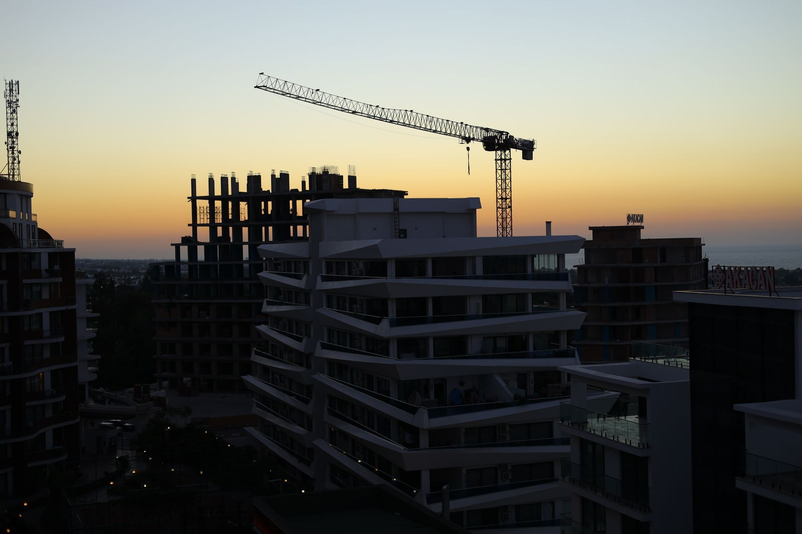

01
Riverside Quarter
Mixed-use development · 42,000 m²
Mixed-use development · 42,000 m²
Working from early feasibility through delivery, our team coordinated design, procurement and construction around a clear shared plan.
Scope: pre-construction, construction management, delivery and aftercare. This is an illustrative project case study.